[11-4] SPI通信外设 — 学习笔记
- 课程：江协科技《STM32入门教程-2023版 细致讲解 中文字幕》
- 视频：BV1th411z7sn?p=39，45:30（2730 秒）
- 素材：248 帧关键帧（每 11 秒，宽 1280px）+ PP-OCRv4 画面硬字幕 OCR（771 段）；关键截图 15 张随笔记收录（源图在
vidsum_out/stm32_p39/frames/，站内图片在assets/images/stm32-39/） - 字幕情况：该集 B 站没有 CC/AI 字幕，文本由画面烧录的中文字幕 OCR 得到（source=subtitle-ocr）；错字主要是
SPI→ 「SPL」（3 处）、I2C→ 「12C/2C」（13 处）、读取→ 「卖取/卖」、寄存器→ 「寄存哭/奇存」、数据→ 「数居」、波形→ 「波开/开形」，并混入手册页脚（本译文仅供参考…请以英文原稿为准、471/754）——这些不是口述内容，已剔除/校正（清单见文末「存疑」）。 - 本集定位：这是模块 11 的理论课（下）——讲 STM32 内部的 SPI 外设：先看 PPT（外设简介、框图、两种传输流程、软硬件波形对比），再用示波器实测不同分频下非连续传输的字节间隙，最后精读**《STM32F10xxx 参考手册》第 23 章**。本集全程没有写一行代码（Keil 工程从未打开，也没出
SPI_InitTypeDef成员表），只在口述里提到SPI_Cmd和「初始化结构体主要就是用来填充这些位」。结尾 45:17「那到这里，本小节课程，也就结束了」，无明确下节预告——库函数写法在 [11-5]/[11-6]。
一句话结论
软件 SPI 是自己手动翻转电平，主打方便灵活；硬件 SPI 用 STM32 内部的 SPI 外设，主打高性能。SPI 外设简介：STM32 内部集成硬件 SPI 收发电路，由硬件自动执行时钟生成、数据收发，减轻 CPU 负担；可配置 8 位/16 位数据帧（最常用 8 位，因为一般以字节为单位）、高位先行/低位先行（SPI 与 I2C 都是高位先行，串口才是低位先行）；时钟频率 ＝ fPCLK / (2, 4, 8, 16, 32, 64, 128, 256)（分频系数不能任意指定，最低是 PCLK 的 256 分频）；支持多主机模型、主或从操作；可精简为半双工/单工（去掉一根线分时收发＝半双工、只发或只收＝单工）；支持 DMA；兼容 I2S 协议；STM32F103C8T6 的硬件 SPI 资源只有 SPI1、SPI2。总线差异：SPI1 挂 APB2（PCLK＝72MHz）、SPI2 挂 APB1（PCLK＝36MHz），所以SPI1 的最高 SCK 频率比 SPI2 大——开时钟和算 SCK 频率时要注意。为什么知识点这么多：硬件电路不像软件那么灵活，一旦设计出来功能基本定死，所以要考虑最全面的应用场景、把各种可能的结构都做进去，导致很多功能实际上很少用到——学习时抓住主线（主机、全双工、8 位数据帧、高位先行），其他在实践中慢慢探索。框图（图209）分两块：左上＝数据寄存器 + 移位寄存器的经典配合（接收缓冲区 RDR ← 移位寄存器 ← 发送缓冲区 TDR，构成连续数据流；TDR/RDR 共用同一个地址 SPI_DR；写入 DR 数据进 TDR、读取 DR 数据从 RDR 出；移位寄存器受 LSBFIRST 控制位控制——图上画的是低位先行配置，若给 0 则改为左移、高位先出）；右下＝波特率发生器 + 通信电路 + 主控制电路 + CR1/CR2/SR：波特率发生器接受 PCLK（72M/36M），由 CR1 的 BR[2:0] 选分频后输出 SCK；CR1 关键位 BR（波特率）、MSTR（主/从）、CPOL/CPHA（4 种模式）、LSBFIRST、SPE（使能，即 SPI_Cmd）；SR 里 TXE（发送寄存器空）、RXNE（接收寄存器非空）、BSY 等；CR2 是中断/SSOE/DMA 等使能位。MOSI/MISO 交叉电路的作用是主从模式引脚变换：做主机时 MOSI 为主机输出、MISO 为主机输入，不走交叉；做从机时 MOSI 变 SI、MISO 变 SO，走交叉支路——本课程只用主模式。收发流程：写 SPI_DR → 数据进 TDR；移位寄存器空时 TDR 的数据自动转入移位寄存器发送，并置 TXE=1（这时可以立刻写下一个字节，数据前仆后继实现不间断传输）；接收时移位寄存器里的数据整体转入 RDR，同时置 RXNE=1，必须尽快从 RDR 读出，否则会被下一个数据覆盖；BSY 在有数据传输时由硬件置 1、传输结束自动清除。三种通信的收发缓冲设计对比：SPI 全双工 → 发送和接收分离（TDR/RDR 各一个）、I2C 收发不会同时进行 → 数据寄存器可以共用、串口收发分离 → 也是两套缓冲——设计理念相同、细节不同。NSS 引脚：分硬件 NSS 模式（SSM=0；SSOE=1 时 NSS 作输出，主机结束后 SSOE 清 0、NSS 变输入；外部输入低电平说明已有别的主机，本机不能进主模式）与软件 NSS 模式（SSM=1，内部电平由 SSI 位决定）；它主要是为多主机仲裁准备的——作者用「揪小辫子」比喻：谁先跳出来做主机，就揪住所有其他人的小辫子（把公共 NSS 拉低），其他人想跳出来时发现小辫子被揪住就做不了主机；多从机选择它做不了（需要额外寻址，实现复杂），所以本课程不用硬件 NSS，SS 用普通 GPIO 模拟。简化结构图（作者自画，PPT 标题栏误写成「I2C基本结构」，实际是 SPI 结构图）：波特率发生器 → GPIO → SCK；数据控制器 → 接收数据寄存器 RDR / 移位寄存器 / 发送数据寄存器 TDR；GPIO → MOSI/MISO；开关控制＝SPI_Cmd；图里没有画 SS 引脚（用 GPIO 模拟）。两种传输流程（口述顺序：先图218 非连续、再图213 连续）：图218「非连续传输」——配置模式 3（CPOL=1/CPHA=1）、低位先行，流程 4 步：① 等 TXE=1 ② 写发送数据到 TDR ③ 等 RXNE=1 ④ 读 RDR 接收数据，字节之间有明显间隙（第二个字节还没送来）；图213「主模式全双工连续传输」——写 DR 后当 TXE=1 就立刻写下一个字节，时钟连续无间隙，同时还要及时处理 RXNE，效率最高但程序难写（发送与接收的操作顺序被交叉，不是「发1收1发2收2」而是「发1发2…收1」）。示波器实测（模式 0、交换 5 个字节）：256 分频几乎看不出间隙；128/64 分频间隙可见但占比小；2 分频（SCK＝72M/2＝36MHz，已超示波器采样率）时间隙占比是数据传输的好几倍——所以非连续传输在极限频率下远达不到标称效率，追求极限性能要用连续传输或 DMA；日常用非连续传输的 4 行代码即可。手册第 23 章：23.1 SPI 简介（大容量/互联型可配 SPI 或 I2S，小容量/中容量不支持 I2S；警告：SPI3/I2S3 的部分引脚与 JTAG 共用——SPI3_NSS/I2S3_WS 与 JTDI、SPI3_SCK/I2S3_CK 与 JTDO，复位后默认保留为 JTAG 用途）；23.3 功能描述（框图、NSS、4 种模式、主模式配置步骤、裁剪为半双工/单工、CRC）；23.3.10 错误标志（MODF）；23.5 寄存器（CR1/CR2/SR/DR/CRCPR/RXCRCR/TXCRCR）、23.5.10 寄存器地址映象（表171）；I2S 相关寄存器与 CRC 了解即可。
0. 本集定位：理论课（SPI 外设原理 + 手册 23 章），代码在 11-5/11-6
- 本集全程无代码：只打开 PPT 和参考手册 PDF，Keil 工程从未打开，也没有
SPI_InitTypeDef成员表； - 只在口述里提到
SPI_Cmd（使能，对应 CR1 的 SPE）和「初始化结构体主要就是用来填充这些位」； - 片尾 45:17「那到这里，本小节课程，也就结束了」——无下节预告；按课程顺序，库函数写法在 [11-5]/[11-6]。
1. SPI 外设简介
1.1 功能列表
- STM32 内部集成了硬件 SPI 收发电路：可以由硬件自动执行时钟生成、数据收发等功能，减轻 CPU 负担（不用自己手动翻转电平）；
- 可配置 8 位/16 位数据帧、高位先行/低位先行；
- 时钟频率：fPCLK / (2, 4, 8, 16, 32, 64, 128, 256)；
- 支持多主机模型、主或从操作；
- 可精简为半双工/单工通信；
- 支持 DMA；
- 兼容 I2S 协议；
- STM32F103C8T6 硬件 SPI 资源：SPI1、SPI2。
为什么知识点这么多：硬件电路不像软件那么灵活（软件改代码就行，硬件一旦设计出来功能基本定死），所以设计时要考虑最全面的应用场景、把各种可能的结构都做出来，以免用的时候找不到——结果就是结构复杂、知识点多，而很多功能实际很少用到。学习策略：先抓住最简单的主线（主机、全双工、8 位数据帧、高位先行），其他在实践中慢慢探索。
1.2 数据帧
- SPI 最常用的配置是 8 位数据帧：波形上每次交换的数据都是 8 个 bit；
- 因为一般以字节为单位，一个字节就是 8 位，所以 8 位数据帧最常见；
- STM32 还可以设计成 16 位数据帧（16 位用得很少）。
1.3 位序：高位先行 vs 低位先行
- SPI 基本上都是高位先行（MSB First）；I2C 也是高位先行；串口是低位先行（LSB First）；
- 例：发 0x34（0011 0100）——产生波形时数据由高位到低位依次出现（先 0、0、1、1…）；
- 对低位先行的协议（如串口）：0x55＝0101 0101，产生波形时数据由低位到高位依次出现（从前到后是 10101010），看对应数据时要从右往左看才是 0101 0101＝0x55；
- 注意：本集后面示例波形（图213/图218）画的都是低位先行（b0 在前），实际 SPI 高位先行用得更多——理解时序时要注意区分（对理解时序影响不大）。
1.4 时钟频率与总线
- SCK 频率 ＝ fPCLK / 分频系数：一个 SCK 时钟交换一位，所以 SCK 频率体现传输速度；
- 分频系数只能是 2/4/8/16/32/64/128/256——频率数值不能任意指定，只能是 PCLK 除这些数；
- PCLK（Peripheral Clock）＝外设时钟：
- SPI1 是 APB2 的外设，PCLK＝72MHz；
- SPI2 等是 APB1 的外设，PCLK＝36MHz；
- 所以 SPI1 的最高 SCK 频率比 SPI2 大——开时钟时要注意（APB1/APB2 不同），计算 SCK 频率时也要注意；
- 最低频率是 PCLK 的 256 分频；对比 I2C 最大只有 400kHz，SPI 的速度上限高得多。
1.5 其他功能（了解即可）
- 多主机模型：SPI 也支持，但实现复杂、用得很少——本课程只学 SPI 做主机的情况；
- 半双工：把两根数据线合成一根线分时收发，节省一根通信线；
- 单工：只保留发送线（只发）或只保留接收线（只收）；
- DMA：让 DMA 自动搬运数据，比手动操作更高效；少量数据可以不用；
- I2S：数字音频传输的专用协议（把音乐数据按约定格式送到 DAC 再输出到扬声器），和 I2C 区别挺大、别搞混；SPI 与 I2S 电路可以共用（所以手册里有一半内容在讲 I2S）；本课程用不到，感兴趣可以看看。
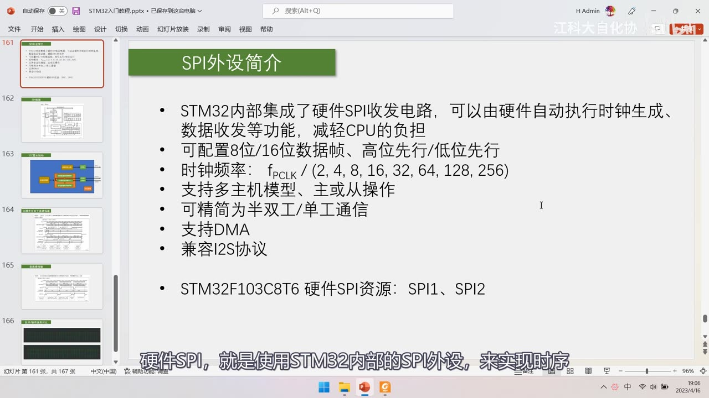
图 1：PPT「SPI外设简介」全条目——STM32 内部集成硬件 SPI 收发电路，可由硬件自动执行时钟生成、数据收发等功能，减轻 CPU 负担；可配置 8 位/16 位数据帧、高位先行/低位先行；时钟频率 fPCLK/(2, 4, 8, 16, 32, 64, 128, 256)；支持多主机模型、主或从操作；可精简为半双工/单工通信；支持 DMA；兼容 I2S 协议；STM32F103C8T6 硬件 SPI 资源：SPI1、SPI2；字幕「硬件SPI，就是使用STM32内部的SPI外设，来实现时序」
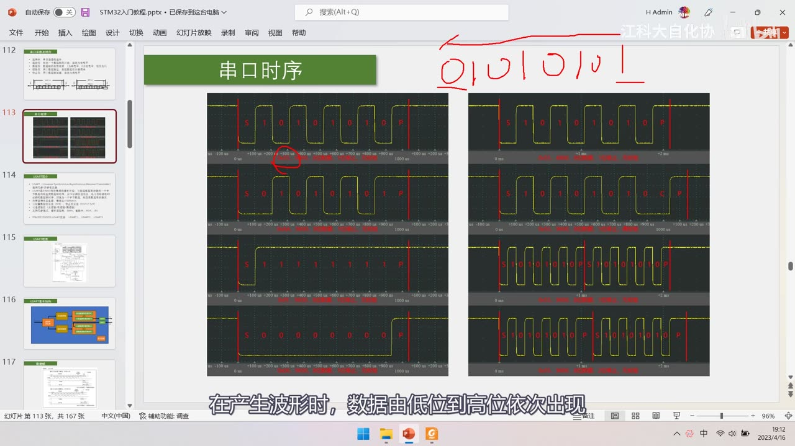
图 2：PPT「串口时序」（对比用）+ 右上角红笔写「01010101」——串口的波形是低位先行：产生波形时数据由低位到高位依次出现；字幕「在产生波形时，数据由低位到高位依次出现」
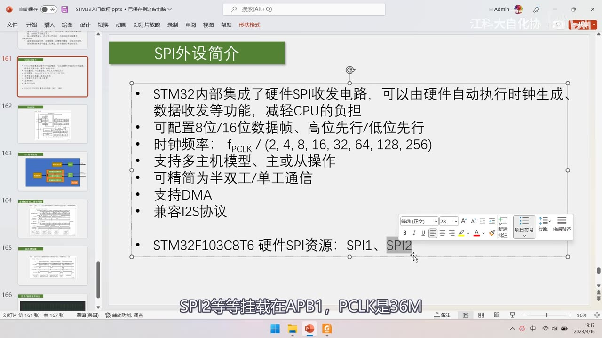
图 3：简介页 + 「SPI2」被框选——讲总线差异：SPI1 挂 APB2（PCLK 72M）、SPI2 等挂 APB1（PCLK 36M）；字幕「SPI2等等挂载在APB1，PCLK是36M」
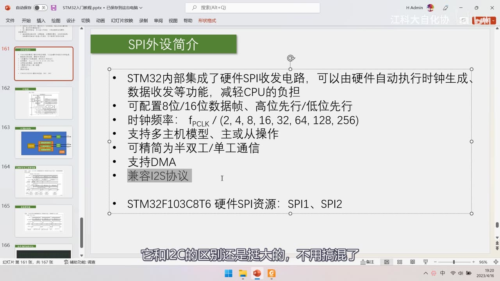
图 4：简介页 + 「兼容 I2S 协议」被灰色高亮——讲 I2S 是数字音频专用协议、与 I2C 区别很大；字幕「它和I2C的区别挺大的，不用搞混了」
2. SPI 框图（图209）
2.1 整体分两块
- 左上：数据寄存器 + 移位寄存器配合——和串口、I2C 那里的设计思路异曲同工，主要是为了实现连续的数据流（数据前仆后继）；
- 右下：波特率发生器 + 通信电路 + 主控制电路 + CR1/CR2/SR——各种黑盒电路，具体可查手册的寄存器描述。
2.2 数据通路：DR / TDR / RDR / 移位寄存器
- 数据寄存器 DR（
SPI_DR）：下面的发送缓冲区就是发送数据寄存器 TDR，上面的接收缓冲区就是接收数据寄存器 RDR——TDR 和 RDR 占用同一个地址； - 写入 DR 时：数据写入 TDR（发送方向）；
- 读取 DR 时：数据从 RDR 读出（接收方向）；
- 移位寄存器：受
LSBFIRST控制位控制——图上画的是低位先行（输入从右边移进来、从左边移出去，即右移）；如果LSBFIRST给 0，就改为左移、高位先出； - 发送流程：写入 DR → 数据进 TDR → 移位寄存器没有数据在移位时，TDR 里的数据立刻转入移位寄存器开始发送，并置 SR 的
TXE=1（发送寄存器空）→ 检测到 TXE=1 后立刻写下一个字节，数据就能不间断跟进，实现连续传输； - 接收流程：移位寄存器自动产生时钟，移入的数据整体转入 RDR，同时置
RXNE=1（接收寄存器非空）→ 必须尽快从 RDR 读出，否则下一个数据到来会把它覆盖； BSY：有数据传输时由硬件置 1，传输结束后由硬件清除。
2.3 MOSI/MISO 交叉电路
- 这块电路用来进行主从模式的引脚变换：
- 做主机时：MOSI 是主机输出、MISO 是主机输入，不走交叉；
- 做从机时：MOSI 变成 SI（从机输入）、MISO 变成 SO（从机输出），都要走交叉的那条支路；
- 简而言之：主机和从机的输入输出模式不同，所以需要交叉电路来切换；本课程只用主模式。
2.4 波特率发生器与寄存器
- 波特率发生器：输入时钟是 PCLK（72M 或 36M），经过分频器后输出到 SCK 引脚；
- 分频由 CR1 的
BR0、BR1、BR2（即BR[2:0]） 控制：三位可以执行 2～256 的分频； - CR1 关键位：
BR（BaudRate）：配置波特率（SCK 频率）；MSTR（Master）：选择主/从模式，一般用主模式；CPOL/CPHA：选择 SPI 的 4 种模式；LSBFIRST：高位先行/低位先行；SPE：外设使能（SPI_Cmd配置的就是这一位）；- 还有 BIDIMODE/BIDIOE/CRCEN/CRCNext/RXONLY/SSM/SSI 等（半双工/单工、CRC、NSS 相关，本课程用不到）；
- SR 状态寄存器：
TXE（发送寄存器空）、RXNE（接收寄存器非空） 是收发时最常关注的两个，另有 BSY/OVR/MODF/CRCERR 等； - CR2 寄存器：主要是中断使能（TXEIE/RXNEIE/ERRIE）、SSOE、DMA 使能等——「一些使能位」。
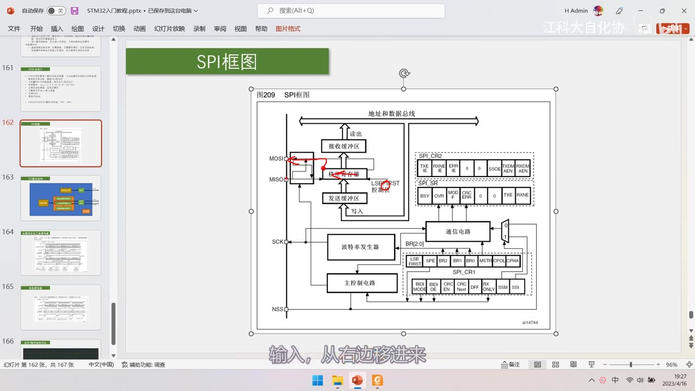
图 5：PPT「SPI框图」（图209）——接收缓冲区（读出）↕ 移位寄存器（受 LSBFIRST 控制位）↕ 发送缓冲区（写入）；右侧 SPI_CR2（TXEIE/RXNEIE/ERRIE/SSOE/DMAEN 等）、SPI_SR（BSY/OVR/MODF/CRCERR/…TXE/RXNE）、通信电路；下方波特率发生器（BR[2:0]）、主控制电路、SPI_CR1（LSBFIRST/SPE/BR2～BR0/MSTR/CPOL/CPHA/…）；左侧 MOSI/MISO/SCK/NSS；字幕「输入，从右边移进来」
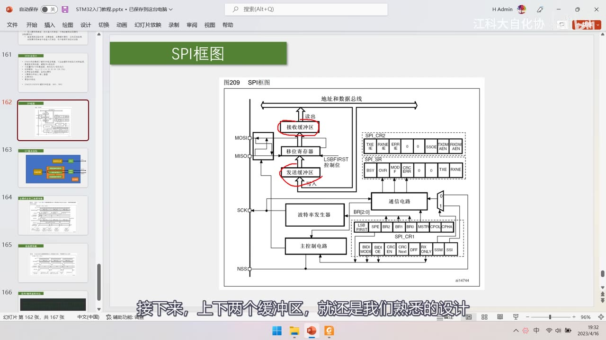
图 6：同一框图 + 红笔圈出「接收缓冲区」与「发送缓冲区」——讲上下两个缓冲区就是熟悉的「数据寄存器 + 移位寄存器」设计；字幕「接下来，上下两个缓冲区，就还是我们熟悉的设计」
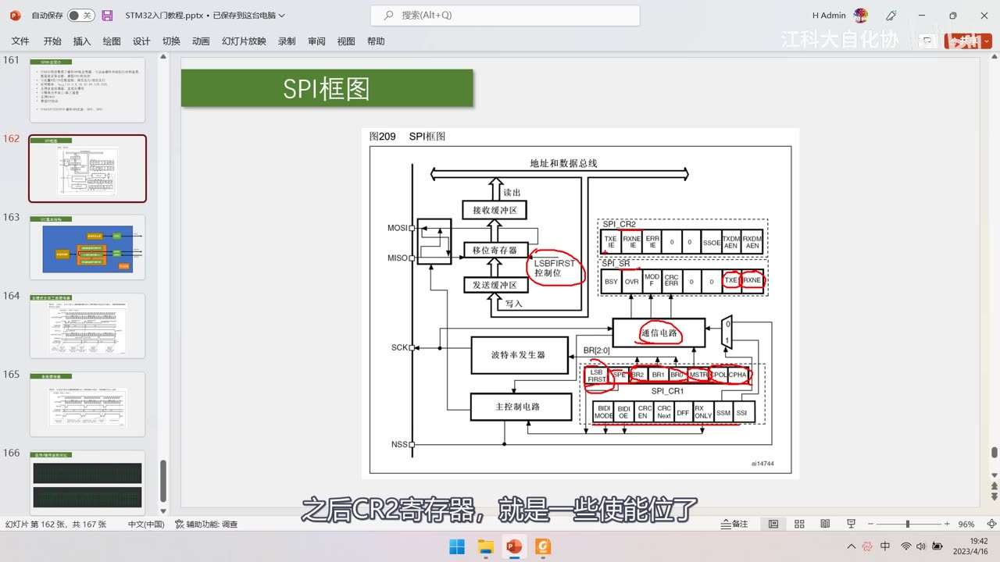
图 7：同一框图 + 红笔圈出 LSBFIRST 控制位、通信电路、SR 的 TXE/RXNE、CR1 的 LSBFIRST/BR/MSTR/CPOL/CPHA 等位——讲 CRC 与 I2S 使能位不用关注；字幕「之后CR2寄存器，就是一些使能位了」
2.5 NSS 引脚与多主机仲裁
- NSS：硬件 NSS 模式（
SSM=0）：SSOE=1时 NSS 作为输出引脚（主机用它拉低来「揪小辫子」），主机结束后 SSOE 清 0、NSS 变回输入；外部输入低电平说明总线上已经有设备在做主机，本机就进不了主模式； - 软件 NSS 模式（
SSM=1）：内部 NSS 的电平由SSI位决定（1 还是 0 自己写）； - 「揪小辫子」比喻（作者注：这是他看手册的理解）：假设 3 个 STM32 的 NSS 连在一起——谁先跳出来做主机，就把公共 NSS 拉低（揪住所有人的小辫子），其他设备就算想跳出来做主机，发现自己小辫子被揪住也做不了；主机结束后松开，下一个才能当主机；
- 局限：这样只能实现「同一时刻只有一个主机」，要实现指定某个从机通信还得再加寻址机制，实现起来比较复杂；
- 本课程的结论：不用硬件 NSS，SS 用普通 GPIO 模拟——因为硬件 NSS 完成不了多从机选择的需求。
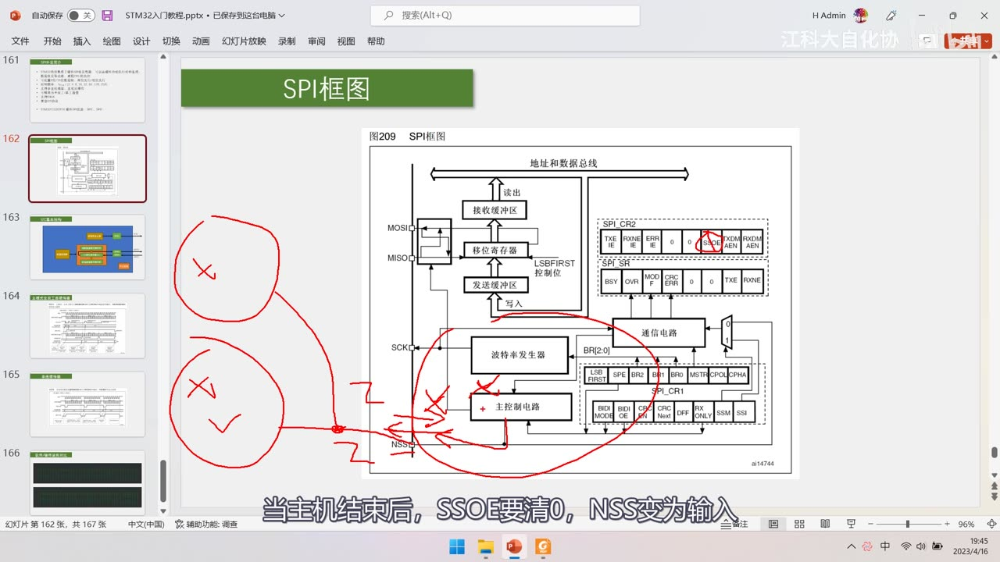
图 8：同一框图 + 左侧红笔「揪小辫子」示意图（画小人、叉号、以及从 NSS 引出并打叉的线），右上角 SSOE 与 CR1 的 SSM/SSI 被圈出——讲硬件 NSS 的输出/输入切换；字幕「当主机结束后，SSOE要清0，NSS变为输入」
3. 简化结构图（作者自画）
⚠ 注意：这张 PPT 的标题栏写着「I2C基本结构」，实际内容是 SPI 的简化结构图（作者 PPT 模板遗留），引用时注意这个标题是错的。
- 波特率发生器 → GPIO → SCK；
- 数据控制器（控制所有电路运行）→ 接收数据寄存器 RDR /
<<移位寄存器<</ 发送数据寄存器 TDR； - 移位寄存器 ↔ GPIO → MOSI / MISO（双向各一根）；
- 开关控制＝
SPI_Cmd（使能整个外设）； - 图里没有画 SS（从机选择）引脚——因为本课程用普通 GPIO 模拟；
- 重点记住这几个词：TDR、TXE、RDR、RXNE（后面会经常提到）。
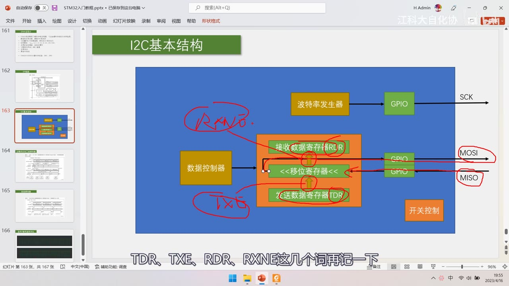
图 9：简化结构图（PPT 标题栏误写为「I2C基本结构」，实为 SPI 简化结构图）——波特率发生器 → GPIO → SCK；数据控制器 → 接收数据寄存器 RDR / <<移位寄存器<< / 发送数据寄存器 TDR（红笔标 RDR/RXNE、TDR/TXE）；GPIO → MOSI、MISO（红圈）；右下角「开关控制」；字幕「TDR、TXE、RDR、RXNE这几个词再记一下」
4. 两种传输流程
视频讲解顺序是先讲图213（连续，25:43–32:25）、再讲图218（非连续，33:47 起）（图218 的图在 25:29 先露了一下）；本节为便于理解把「非连续」放前面讲，与视频顺序相反。
4.1 图218：非连续传输
- 标题：非连续传输发送（
BIDIMODE=0且RXONLY=0）时，TXE/BSY 变化示意图；例子配置 CPOL=1、CPHA=1（SPI 模式 3）、低位先行； - 4 步流程（可封装成「交换一个字节」函数）：
- 软件等待
TXE=1（TDR 为空）； - 软件写入发送数据至 TDR（写
SPI_DR）； - 软件等待
RXNE=1（接收寄存器非空）； - 软件读取 RDR 的接收数据（读
SPI_DR）；
- 软件等待
- 之后交换第二个字节同理；封装好之后，和之前软件 SPI 的流程基本一样，可以直接把软件 SPI 改成硬件 SPI；
- 缺点：数据写入 TDR 后，字节时序结束时下一个字节还没送过来，于是字节之间会产生间隙，拖慢整体传输速度；
- 间隙的影响：SCK 频率低时影响不大；SCK 频率非常高时，间隙占比会很大（见下一节示波器实测）；
- 优点：容易封装、好理解、好用。
4.2 图213：主模式全双工连续传输
- 标题：主模式、全双工模式下（
BIDIMODE=0且RXONLY=0）连续传输时，TXE/RXNE/BSY 变化示意图；同样 CPOL=1、CPHA=1（模式 3）； - 流程：写入
0xF1→ TDR → 移位寄存器发送，TXE=1 时立刻写下一个数据 0xF2（不等波形发完），数据前仆后继，时钟可以连续不间断产生、没有任何空隙；同时接收侧 RXNE=1 时要及时读 RDR（数据是0xA1/A2/A3）； - 注意：发送与接收的操作顺序是交叉的——不是「发数据1、收数据1、发数据2、收数据2」，而是**「发数据1、发数据2…之后接收数据1」，所以对程序设计不太友好**；
- 适用：对传输效率有非常高要求时用；否则用非连续传输。
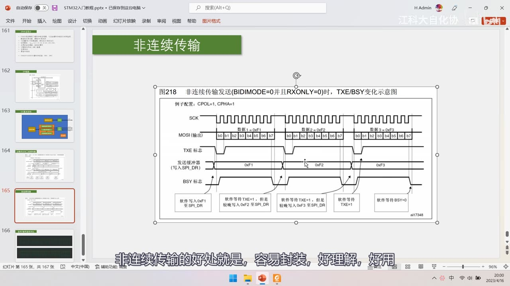
图 10：PPT「非连续传输」（图218 非连续传输发送，BIDIMODE=0 且 RXONLY=0，TXE/BSY 变化示意图）——例子配置 CPOL=1、CPHA=1；SCK、MOSI(输出) 的 b0～b7、TXE 标志、发送缓冲器（写入 SPI_DR）的 0xF1/0xF2/0xF3、BSY 标志；底部操作框：软件写入 0xF1 至 SPI_DR / 软件等待 TXE=1，但是较晚写入 0xF2 至 SPI_DR / … / 软件等待 BSY=0；字幕「非连续传输的好处就是，容易封装，好理解，好用」
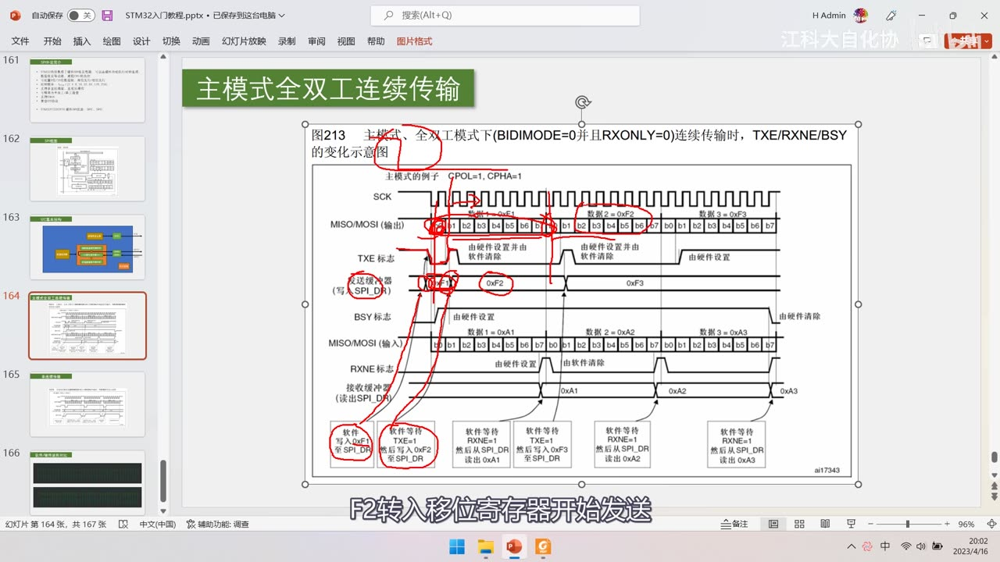
图 11：PPT「主模式全双工连续传输」（图213）——主模式、全双工（BIDIMODE=0 且 RXONLY=0）连续传输时 TXE/RXNE/BSY 变化示意图，例子 CPOL=1、CPHA=1；SCK、MISO/MOSI(输出) 的 0xF1/0xF2/0xF3、TXE 标志、发送缓冲器、BSY 标志、MISO/MOSI(输入) 的 0xA1/0xA2/0xA3、RXNE 标志、接收缓冲器；底部红圈操作框（软件写入 0xF1 / 软件等待 TXE=1 然后写入 0xF2 / 软件等待 RXNE=1 然后从 SPI_DR 读出 0xA1…）；字幕「F2转入移位寄存器开始发送」
5. 示波器实测：不同分频下非连续传输的间隙
- 测试条件：SPI 模式 0、非连续传输、连续交换 5 个字节；上面 CH1 是 SCK、下面 CH2 是 SS（低电平表示选中从机）；
- 256 分频：SCK ≈ 72M/256 ≈ 281kHz（示波器给出的整帧重复率 F=569.557Hz），几乎看不出字节之间的间隙——「连续交换了 5 个字节，但你几乎看不出间隙」；
- 128 分频：可以明显看出字节之间不严丝合缝，但从比例上看仍然很小，可以忽略不计；
- 64 分频：SCK 频率大概 1M 多点，频率增大、时间尺度缩小，间隙更明显；
- 2 分频：SCK ＝ 72M/2 ＝ 36MHz，已经超过示波器的采样频率，所以每个字节的时钟都看不完整了；但哪里在传输、哪里是间隙仍能区分——间隙所占的时间比例已经是数据传输的好几倍；
- 结论：忽略间隙算出的速率应是 256 分频的 128 倍，但实测肯定达不到——因为2 分频虽然「干活效率高」，但每干 1 个时间单位就要休息好几个时间单位；所以追求极限性能必须用连续传输或 DMA，日常用非连续传输即可。
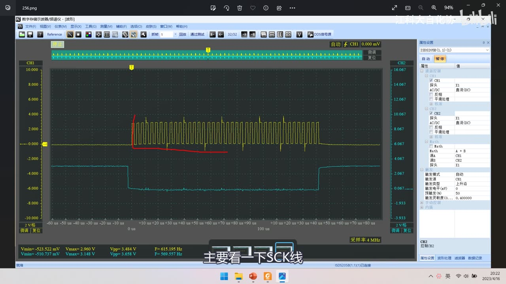
*图 12：示波器 256 分频实测（CH1 黄＝SCK、CH2 青＝SS，采样率 4MHz）——连续交换 5 个字节，几乎看不出字节间隙，红色笔迹标出数据传输区间；字幕「主要看一下SCK线」*
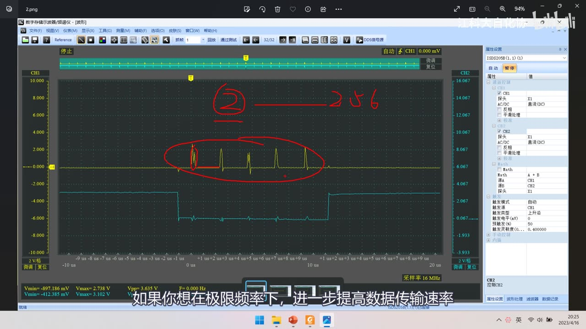
*图 13：示波器 2 分频实测（采样率 16MHz）——SCK 只剩极窄的脉冲串，红笔写「② 256」并圈出数据区，间隙占比已远超数据本身；字幕「如果你想在极限频率下，进一步提高数据传输速率」*
6. 软硬件波形对比
- 上面是软件 SPI 波形、下面是硬件 SPI 波形，数据变换趋势完全一致、采样得到的数据也一致；
- 区别：硬件波形的数据线变化是紧贴 SCK 边沿的，而软件波形有延迟（和上一集 I2C 的软硬件对比一样）；
- 更深一层：I2C 描述的是「SCL 下降沿数据移出」，SPI 也是「下降沿移出、上升沿移入」——两者最终波形的表现形式都是「数据变化尽量紧贴边沿」，这样数据才稳定、不容易出错。
7. 参考手册第 23 章
7.1 23.1 SPI 简介
- SPI 接口默认工作在 SPI 方式，可以通过软件把功能从 SPI 模式切换到 I2S 模式；
- 大容量产品和互联型产品上可配置为 SPI 或 I2S；小容量和中容量产品上不支持 I2S（本课程用的 F103C8T6 属中容量 → 没有 I2S）；
- 警告：SPI3/I2S3 的部分引脚与 JTAG 共用——
SPI3_NSS/I2S3_WS与JTDI、SPI3_SCK/I2S3_CK与JTDO；这些引脚不受 IO 控制器控制，复位后默认保留为 JTAG 用途；若要当 SPI3 用，需要关闭 JTAG 改用 SWD 接口（详见 8.3.5 节）； - 后面是 SPI 与 I2S 的主要特性列表、框图、NSS 硬件/软件模式等内容（作者说「看不懂的可以不必深究」）。
7.2 23.3 功能描述要点
- NSS 硬件模式（
SSM=0）：SSOE=1时 NSS 作输出；外部输入低电平时不能进主模式； - 4 种模式（CPOL/CPHA）的图就是前面讲的那张；
- 主模式的配置步骤（手册用寄存器方式描述）：设置 CPOL、CPHA、LSBFirst、BR、SSM、SSI、MSTR 等位 → 使能 SPI（SPE）——用库函数更容易理解，「只要这个过程清楚了，配置 SPI 就清楚了」；
- 裁剪为半双工/单工：把标准全双工 SPI 变成「1 条时钟 + 1 条双向数据线」（半双工）或「1 条时钟 + 1 条单向数据线」（单工）——本课程只需要看主模式全双工的部分；
- 连续传输发送流程、CRC 计算（数据流后面跟 CRC 校验码，用于判断传输是否出错——本课程不用）、利用 DMA 的 SPI 通信（了解即可）、错误标志与中断（MODF 主模式失效错误等，需要时再看）。
7.3 23.5 寄存器
SPI_CR1：配置电路——BIDIMODE/BIDIOE/CRCEN/CRCNext/RXONLY/SSM/SSI/LSBFIRST/SPE/BR[2:0]/MSTR/CPOL/CPHA；初始化结构体主要就是用来填充这些位；SPI_CR2：也是配置电路——TXEIE/RXNEIE/ERRIE/SSOE/TXDMAEN/RXDMAEN 等中断/DMA 使能；SPI_SR：标志位多，重点是TXE和RXNE（另有 BSY/OVR/MODF/CRCERR）；SPI_DR：写操作写到发送缓冲区（TDR）、读操作返回接收缓冲区（RDR）的数据；SPI_CRCPR（CRC 多项式）、SPI_RXCRCR、SPI_TXCRCR：CRC 相关，本课程不用；- 23.5.10 寄存器地址映象（表171）：
SPI_CR1@000h、SPI_CR2@004h、SPI_SR@008h、SPI_DR@00Ch、SPI_CRCPR@010h、SPI_RXCRCR@014h、SPI_TXCRCR@018h；后面还有 I2S 的寄存器（了解即可）。
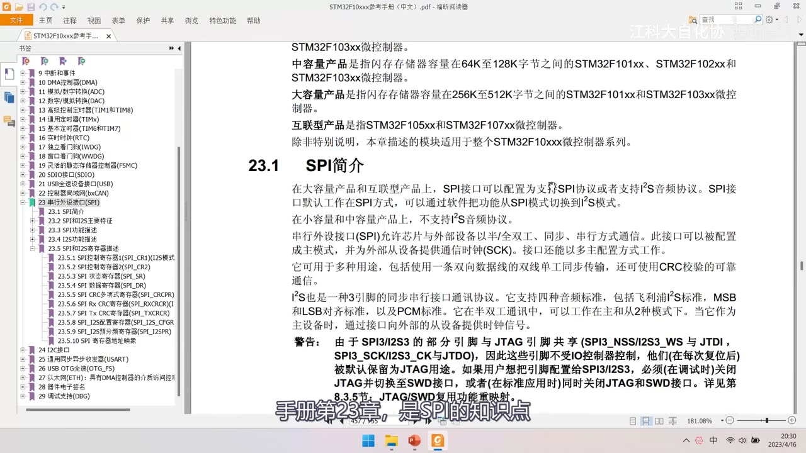
图 14：手册第 23 章「23.1 SPI简介」——大容量/互联型产品可配置 SPI 或 I2S，小容量和中容量产品不支持 I2S；SPI 允许芯片与外部设备以半/全双工、同步、串行方式通信；I2S 是 3 引脚同步串行接口；警告：SPI3/I2S3 部分引脚与 JTAG 共用（SPI3_NSS/I2S3_WS 与 JTDI、SPI3_SCK/I2S3_CK 与 JTDO），这些引脚不受 IO 控制器控制、复位后默认保留为 JTAG 用途，需要关闭 JTAG 改用 SWD；左侧是 23.3.1～23.5.10 书签；字幕「手册第23章，是SPI的知识点」
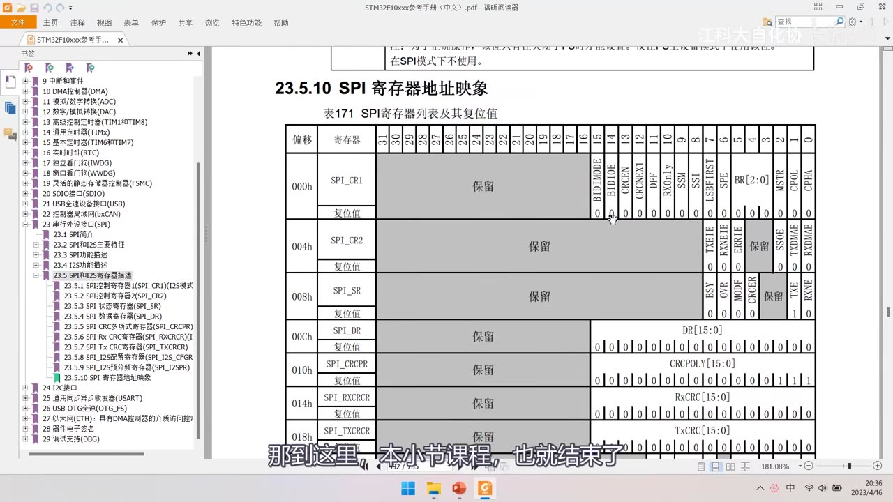
图 15：手册「23.5.10 SPI寄存器地址映象」表171——000h SPI_CR1（BIDIMODE/BIDIOE/CRCEN/CRCNext/RXONLY/SSM/SSI/LSBFIRST/SPE/BR 的 2:0 位/MSTR/CPOL/CPHA）、004h SPI_CR2（TXEIE/RXNEIE/ERRIE/SSOE/TXDMAEN/RXDMAEN）、008h SPI_SR（BSY/OVR/MODF/CRCERR/…TXE/RXNE）、00Ch SPI_DR（DR 的 15:0 位）、010h SPI_CRCPR（CRCPOLY）、014h SPI_RXCRCR、018h SPI_TXCRCR；字幕「那到这里，本小节课程，也就结束了」
坑与易错点
- SCK 频率不能任意指定：只能是 fPCLK/(2,4,8,16,32,64,128,256)，最低是 256 分频。
- SPI1 与 SPI2 挂的总线不同：SPI1→APB2（72M）、SPI2→APB1（36M），开时钟和算 SCK 频率别搞混。
- SPI 与 I2C 都是高位先行，串口才是低位先行：看低位先行的波形时要从右往左还原数据。
- 本集示例波形是低位先行、模式 3（图213/图218），实际最常用高位先行、模式 0——别把示例配置当成通用配置。
- TDR/RDR 共用
SPI_DR地址：写 DR 是发、读 DR 是收，别以为有两个不同地址。 - TXE=1 表示「发送寄存器空」可以写下一个；RXNE=1 表示「收到数据」要及时读，读晚了会被下一个数据覆盖。
BSY由硬件置位/清除：判断传输是否真的结束要看 BSY（关闭 SPI 前要等最后一个 RXNE=1）。- 图213 是「连续传输」、图218 是「非连续传输」（口述顺序先 218 再 213），别写反。
- 连续传输的收发顺序是交叉的：不是「发1收1发2收2」，而是「发1发2…收1」，程序设计与直觉不同。
- 非连续传输有字节间隙：SCK 频率越高间隙占比越大，极限性能要用连续传输或 DMA。
- 硬件 NSS 做不了多从机选择：本课程用 GPIO 模拟 SS；NSS 硬件模式只用于多主机仲裁。
- 多主机「揪小辫子」只是理解思路：真要指定从机通信还得加寻址机制。
- 简化结构图的标题栏是错的（写着「I2C基本结构」），实际是 SPI 结构图。
- SPI3/I2S3 引脚与 JTAG 共用：要用 SPI3 得先关闭 JTAG 改用 SWD。
- fPCLK 与分频算出的频率只是上限：实际能跑多快还要看从机器件与接线。
时间轴
| 时间 | 内容 |
|---|---|
| 0:02 | 本小节继续学习 SPI 通信 |
| 0:05 | 这次学习的是硬件 SPI |
| 0:11 | 软件 SPI 是用代码手动翻转电平 |
| 0:23 | 软件实现主打方便灵活 |
| 0:25 | 硬件实现主打高性能 |
| 0:29 | 看 PPT：SPI 外设简介 |
| 0:41 | 硬件自动生成时序，减轻 CPU 负担 |
| 0:44 | 不用自己手动翻转电平 |
| 0:58 | 硬件电路不像软件那么灵活 |
| 1:00 | 一旦设计出来，功能基本就定死了 |
| 1:07 | 设计时要考虑最全面的应用场景 |
| 1:16 | 把各种可能的结构都设计出来 |
| 1:21 | 导致外设的结构和知识点非常多 |
| 1:24 | 很多功能我们基本很少用到 |
| 1:31 | 抓住最简单的主线知识点贯通 |
| 1:40 | 在实践中慢慢探索分支 |
| 1:43 | 这样学习起来比较容易 |
| 1:49 | 看手册学习时先掌握主线 |
| 2:00 | SPI 最常用的配置是 8 位数据帧 |
| 2:06 | 那 16 位数据帧是什么意思 |
| 2:08 | 看 SPI 的波形 |
| 2:11 | 每次交换的数据都是 8 个 bit |
| 2:17 | 8 位数据帧最常见，一般以字节为单位 |
| 2:22 | STM32 还可以设计成 16 位数据帧 |
| 2:40 | 16 位的用得很少 |
| 2:43 | 还有高位先行和低位先行 |
| 2:46 | 在 SPI 里基本上都是高位先行 |
| 2:49 | 比如要发 0x34 |
| 2:54 | 转成二进制是 00110100 |
| 2:58 | 左边是数据高位，右边是数据低位 |
| 3:02 | 产生波形时数据由高位到低位依次出现 |
| 3:08 | SPI 和 I2C 都采用高位先行的策略 |
| 3:12 | 串口是低位先行的 |
| 3:22 | 0x55 转二进制是 01010101 |
| 3:31 | 产生波形时数据由低位到高位依次出现 |
| 3:35 | 从前到后是 10101010 |
| 3:40 | 看对应的数据时要从右往左看 |
| 3:44 | 01010101 才是 0x55 |
| 3:49 | 图并没有画错，低位先行要反过来看 |
| 3:56 | 回到 SPI |
| 3:59 | SCK 波形的频率 |
| 4:03 | 一个 SCK 时钟交换一位，体现传输速度 |
| 4:12 | 时钟频率是 fPCLK 除分频系数 |
| 4:17 | 分频系数可以配置为 2、4、8… |
| 4:29 | PCLK 就是外设时钟 |
| 4:33 | APB2 的 PCLK 是 72MHz |
| 4:37 | SPI1 是 APB2 的外设，PCLK=72MHz |
| 4:50 | I2C 频率最大只有 400kHz |
| 4:54 | 所以 SPI 的最大速度高得多 |
| 4:58 | 这里频率有些注意事项 |
| 5:01 | 频率数值并不是任意指定的 |
| 5:04 | 只能是 PCLK 执行这些分频后的数值 |
| 5:08 | 最低频率是 PCLK 的 256 分频 |
| 5:13 | SPI1 和 SPI2 挂载的总线不一样 |
| 5:18 | SPI1 挂载在 APB2，PCLK 是 72M |
| 5:22 | SPI2 等等挂载在 APB1，PCLK 是 36M |
| 5:28 | SPI1 的时钟频率比 SPI2 大 |
| 5:33 | 这就是时钟的配置 |
| 5:36 | 支持多主机模型 |
| 5:39 | SPI 多主机模型只作了解 |
| 5:43 | 和之前 I2C 一样写得比较复杂 |
| 5:50 | 不过这些用得很少 |
| 5:52 | 只学 SPI 做主机的情况就行了 |
| 5:55 | 可精简为半双工/单工通信 |
| 5:59 | 这些是为照顾特殊情况设定的 |
| 6:02 | 正常 SPI 是两根数据线 |
| 6:05 | 一根 MOSI 主机发送、一根 MISO 主机接收 |
| 6:15 | 去掉一根线分时收发就是半双工 |
| 6:19 | 节省一根通信线 |
| 6:23 | 去掉接收线只发就是单工 |
| 6:31 | 去掉发送线只收也是单工 |
| 6:38 | 这些是 STM32 对 SPI 的硬件支持 |
| 6:45 | 既然选了 SPI 就发挥全双工优势 |
| 6:53 | 支持 DMA，自动搬运数据 |
| 7:01 | 比手动操作更高效，少量数据可以不用 |
| 7:10 | 兼容 I2S 协议 |
| 7:13 | 它是数字音频传输的专用协议 |
| 7:21 | 和 I2C 的区别还是挺大的 |
| 7:27 | 简单介绍应用场景 |
| 7:33 | 比如一首音乐的数据 |
| 7:41 | 播放时要送到 DAC |
| 7:56 | 再输出到扬声器 |
| 7:57 | 数字信号送到 DAC 的线路 |
| 7:59 | 每位数据定义、传输速度都可指定 |
| 8:07 | 这个标准就是数字音频传输协议 |
| 8:10 | I2S 就是其中一种 |
| 8:12 | 这就是 I2S 的应用领域 |
| 8:17 | 和 SPI 有些共同特征 |
| 8:21 | STM32 把 SPI 和 I2S 做到一起 |
| 8:25 | 有些电路可以共用 |
| 8:28 | 手册里有一半内容在讲 I2S |
| 8:36 | 感兴趣可以看看，暂时用不到 |
| 8:43 | 功能很多，后面这些了解即可 |
| 8:47 | 看这个型号的 SPI 资源 |
| 8:50 | F103C8T6 硬件 SPI 资源有 SPI1、SPI2 |
| 8:57 | SPI1 是 APB2 的外设 |
| 9:02 | 开启时钟时需要注意 |
| 9:05 | 计算 SCK 频率时也要注意 |
| 9:09 | 其他操作基本没有区别 |
| 9:12 | 简介就看到这里 |
| 9:14 | 下面看 SPI 的框图 |
| 9:19 | 可以大致把它分成两部分 |
| 9:21 | 左上是数据寄存器和移位寄存器配合 |
| 9:27 | 和串口、I2C 的设计思路异曲同工 |
| 9:31 | 主要是为了实现连续的数据流 |
| 9:33 | 数据前仆后继 |
| 9:36 | 剩下右下角 |
| 9:43 | 可以通过手册的寄存器描述得知 |
| 10:08 | 移位寄存器受 LSBFIRST 控制位控制 |
| 10:11 | 目前图上表示的是低位先行的配置 |
| 10:22 | 查寄存器描述 |
| 10:26 | LSBFIRST：先发送 MSB 还是先发送 LSB |
| 10:29 | 先发送 MSB 就是高位先行 |
| 10:34 | 先发送 LSB 就是低位先行 |
| 10:40 | 目前 LSBFIRST 应该是 1 |
| 10:44 | 如果 LSBFIRST 给 0 |
| 10:47 | 移位寄存器就变为左移 |
| 10:59 | 继续看左边，MOSI 和 MISO 做了交叉 |
| 11:06 | 这块用来进行主从模式引脚变换 |
| 11:10 | 做主机时交叉电路不用 |
| 11:16 | MOSI 是主机输出、MISO 是主机输入 |
| 11:24 | 如果 STM32 作为从机 |
| 11:27 | MOSI 变 SI（从机输入），走交叉支路 |
| 11:33 | MISO 变 SO（从机输出），也走交叉 |
| 11:46 | 这就是交叉电路的作用 |
| 11:52 | 主机和从机的输入输出模式不同 |
| 11:56 | 切换主从就要用这块电路 |
| 12:01 | 这里画的是高位先行 |
| 12:05 | 高位输出到 MOSI、MISO 输入到低位 |
| 12:11 | 主机输出、从机输入 |
| 12:16 | 主机变从机，MOSI 和 MISO 就要交叉 |
| 12:40 | 数据寄存器就是 DR |
| 12:51 | 发送缓冲区就是发送数据寄存器 TDR |
| 12:56 | 接收缓冲区就是接收数据寄存器 RDR |
| 13:00 | TDR 和 RDR 占用同一个地址 |
| 13:06 | 写入 DR 时数据写入到 TDR |
| 13:12 | 读取 DR 时数据从 RDR 读出 |
| 13:26 | 移位寄存器没有数据移位时 |
| 13:36 | 会置状态寄存器的 TXE 为 1 |
| 13:42 | 检测到 TXE=1 后立刻写下一个数据 |
| 13:49 | 数据立刻跟进，实现不间断传输 |
| 13:56 | 移位寄存器会自动产生时钟 |
| 14:11 | 移入的数据整体转入 RDR |
| 14:18 | 这个时刻置状态寄存器的 RXNE 为 1 |
| 14:23 | 表示接收寄存器非空 |
| 14:25 | 要尽快把数据从 RDR 读出来 |
| 14:35 | 数据已经收到、还没从 RDR 读出 |
| 14:39 | RDR 的数据就会被覆盖 |
| 14:48 | 发送数据先写入 TDR，再转到移位寄存器 |
| 14:54 | 发送同时接收，收到的数据转到 RDR |
| 15:02 | 数据寄存器和移位寄存器配合实现连续传输 |
| 15:08 | 和串口、I2C 的设计思路差不多 |
| 15:14 | SPI 全双工，发送和接收同步进行 |
| 15:21 | I2C 发送和接收可以共用 |
| 15:32 | I2C 发送和接收不会同时进行 |
| 15:37 | 所以数据寄存器可以共用 |
| 15:50 | 串口发送和接收是分离的 |
| 15:55 | 设计理念相同，执行细节不同 |
| 16:18 | 接下来看波特率发生器 |
| 16:28 | 主要用来产生 SCK 时钟 |
| 16:34 | 输入时钟是 PCLK（72M 或 36M） |
| 16:38 | 经过分频器输出到 SCK 引脚 |
| 16:49 | CR1 寄存器的 BR0、BR1、BR2 |
| 16:57 | BR[2:0] 是波特率控制 |
| 17:03 | 三位可以执行 2～256 的分频 |
| 17:12 | 分频之后就是 SCK 时钟 |
| 17:15 | 时钟频率是 fPCLK 的 2～256 分频 |
| 17:23 | 后面是通信电路和各种寄存器 |
| 17:28 | 要具体研究看这些位的寄存器描述 |
| 17:31 | 挑几个重点讲 |
| 17:38 | SPE 就是 SPI_Cmd 函数配置的位 |
| 17:43 | BR 配置波特率 |
| 17:47 | MSTR 选择主从，一般用主模式 |
| 17:54 | CPOL/CPHA 用来选择 4 种模式 |
| 17:59 | SR 是状态寄存器 |
| 18:02 | TXE 发送寄存器空 |
| 18:05 | RXNE 接收寄存器非空 |
| 18:12 | CR2 寄存器是一些使能位 |
| 18:21 | 这里还有个 NSS 引脚 |
| 18:33 | 我们想象的应该是 |
| 18:40 | 手册里的描述更偏向实现多主机模型 |
| 18:46 | 这个 NSS 我们并不会用到 |
| 18:49 | 用 GPIO 模拟就行 |
| 18:53 | SS 引脚很简单 |
| 19:00 | 硬件 NSS 完成不了我们想要的功能 |
| 19:04 | 那 NSS 如何实现多主机切换 |
| 19:08 | 简单介绍一下 |
| 19:11 | 假如这里有 3 个 STM32 设备 |
| 19:15 | 把 3 个设备的 NSS 全都连在一起 |
| 19:24 | 当配置为输出时 |
| 19:33 | 当配置为输入时可以接收别的设备信号 |
| 19:37 | 当有设备是主机时 |
| 19:45 | SSOE=1 时 NSS 作为输出引脚 |
| 20:01 | 主机结束后 SSOE 清 0，NSS 变为输入 |
| 20:06 | 输入信号就会跑到右边这里 |
| 20:13 | SSM 位决定选择哪边 |
| 20:16 | 是硬件 NSS 模式 |
| 20:19 | 外部如果输入低电平 |
| 20:23 | 当前设备就进入不了主模式 |
| 20:27 | 因为 NSS 低电平说明已有设备做主 |
| 20:33 | 我就不能再跟它抢了 |
| 20:35 | 当数据选择器选择下面 |
| 20:39 | NSS 是 1 还是 0 由 SSI 决定 |
| 20:52 | 这时只能乖乖听话 |
| 20:54 | 把所有人的小辫子接在一起 |
| 20:58 | 谁先跳出来做主机 |
| 21:03 | 就揪住其他所有人的小辫子 |
| 21:05 | 其他人都得乖乖听话 |
| 21:08 | 其他人也想跳出来做主机 |
| 21:10 | 发现自己的小辫子被揪住，就做不了主机 |
| 21:16 | 这就是 NSS 实现多主机的思路 |
| 21:24 | 揪住所有人小辫子之后 |
| 21:30 | 想实现指定设备通信可能还要加入寻址 |
| 21:34 | 所以实现起来还是比较复杂的 |
| 21:38 | 这是根据我看手册的理解 |
| 21:49 | 多主机的情况 |
| 21:54 | 这个 SPI 框图就讲完了 |
| 22:05 | NSS 引脚实现多主机 |
| 22:10 | 看完了详细的框图 |
| 22:12 | 下面是我总结的简化结构图 |
| 22:18 | 这样看起来更容易理解 |
| 22:30 | 发送和接收直接叫 TDR 和 RDR |
| 22:32 | 这样表示更清晰 |
| 22:35 | 之前串口框图里叫发送和接收缓冲区 |
| 22:47 | 移位寄存器我画的是左移 |
| 23:00 | 高位移出去，通过 GPIO 到 MOSI |
| 23:04 | 从 MOSI 输出，这是 SPI 主机 |
| 23:08 | 移入的数据通过 GPIO 到移位寄存器低位 |
| 23:39 | TDR、TXE、RDR、RXNE 这几个词再记一下 |
| 23:50 | 波特率发生器产生时钟 |
| 23:54 | 数据控制器控制着所有电路的运行 |
| 23:59 | 开关控制就是 SPI_Cmd，使能整个外设 |
| 24:06 | 这里没有画 SS，用普通 GPIO 模拟 |
| 24:18 | 这就是 SPI 的系统图和简化结构 |
| 24:22 | 写代码时配置这些部分 |
| 24:26 | 高位先行还是低位先行 |
| 24:28 | CPOL 和 CPHA 选择 SPI 模式 |
| 24:31 | 主机还是从机 |
| 24:46 | 如何产生具体的时序 |
| 24:48 | 什么时候写 DR、什么时候读 DR |
| 24:51 | 这是接下来要学习的知识点 |
| 24:55 | 主要看这两个时序图即可 |
| 25:02 | 这个图演示借助缓冲区数据前仆后继 |
| 25:08 | 比较复杂，也不太方便封装 |
| 25:13 | 如果对性能没有极致的追求 |
| 25:15 | 更倾向使用连续传输的示意图 |
| 25:19 | 非连续传输使用起来更加简单 |
| 25:25 | 参考网上别人的代码基本都是连续传输 |
| 25:31 | 非连续传输容易封装、好理解、好用 |
| 25:37 | 连续传输传输更快但操作相对复杂 |
| 25:41 | 那我们来分别具体分析 |
| 25:43 | 先看主模式全双工连续传输的示意图 |
| 25:47 | 第一行是 SCK 时钟线 |
| 25:50 | 这里 CPOL=1、CPHA=1，示例是 SPI 模式 3 |
| 25:57 | 所以 SCK 默认是高电平 |
| 26:07 | 第二行是 MOSI 和 MISO 输出的波形 |
| 26:11 | 跟着 SCK 时钟变化 |
| 26:15 | 从前到后依次出现的是 b0… |
| 26:20 | 所以示例演示的是低位先行 |
| 26:24 | 实际 SPI 高位先行用得多 |
| 26:26 | 对理解时序影响不大 |
| 26:30 | 发送寄存器空标志位 TXE |
| 26:36 | 发送缓冲器（写入 SPI_DR）就是 TDR |
| 26:45 | 由硬件自动设置和清除 |
| 26:50 | 有数据传输时 BUSY 置 1 |
| 26:53 | 上面演示的是输出的流程和现象 |
| 26:57 | 下面是输入的流程和现象 |
| 27:00 | MISO/MOSI 的输入数据 |
| 27:04 | 接收数据寄存器空标志位 RXNE |
| 27:08 | 接收缓冲器（读出 SPI_DR）就是 RDR |
| 27:15 | 了解完各个信号的定义 |
| 27:17 | 从左到右依次分析 |
| 27:20 | SS 置低电平 |
| 27:23 | 但 SS 是必须得有的（本集不画） |
| 27:25 | 刚开始 TXE 为 1，表示 TDR 空 |
| 27:32 | 软件写入 0xF1 至 SPI_DR |
| 27:42 | 写入之后 TDR 变为 0xF1 |
| 27:51 | TDR 是等候区，移位寄存器才是发送区 |
| 27:56 | 移位寄存器刚开始肯定没有数据 |
| 27:58 | 等候区 TDR 里的 F1 立刻转入移位寄存器 |
| 28:04 | 表示发送寄存器空 |
| 28:09 | 移位寄存器有数据了，波形开始生成 |
| 28:13 | 这里画的数据波形时机可能有点早 |
| 28:17 | b0 在这之前还没转入移位寄存器 |
| 28:29 | 数据转入移位寄存器之后 |
| 28:35 | 移位产生 F1 波形的同时 TDR 是空的 |
| 28:40 | 数据能不间断地跟随 |
| 28:52 | 写入 F1 之后软件等待 TXE=1 |
| 29:01 | 在这个位置写入 F2 至 SPI_DR |
| 29:05 | 数据放到 TDR 里候着 |
| 29:12 | F2 转入移位寄存器开始发送 |
| 29:21 | 软件等待 TXE=1，然后写入 F3 至 DR |
| 29:28 | 写入之后 TDR 变为 F3 |
| 29:34 | F3 转入移位寄存器之后 TXE=1 |
| 29:45 | 还需要继续等待 |
| 29:52 | BUSY 标志由硬件清除 |
| 29:56 | 这就是发送的流程 |
| 29:59 | 下面看接收的流程 |
| 30:02 | 发送的同时还有接收 |
| 30:05 | 字节发送完成后 |
| 30:09 | 字节的接收也完成了 |
| 30:11 | 接收到的数据是 A1 |
| 30:13 | 移位寄存器的数据整体转入 RDR |
| 30:17 | RDR 里存的就是 A1 |
| 30:20 | 转入的同时 RXNE 标志位置 1 |
| 30:24 | 我们的操作是读 DR |
| 30:32 | 从 SPI_DR（RDR）读出数据 A1 |
| 30:38 | 软件清除 RXNE 标志位 |
| 30:41 | 数据 2 收到之后 RXNE 重新置 1 |
| 30:46 | 检测到 RXNE=1 就继续读 RDR |
| 30:50 | 这是第二个数据 A2 |
| 30:56 | 数据 3 才能收到 |
| 30:57 | 直到这里才读出来 |
| 31:06 | 我们读取 RDR 要及时 |
| 31:12 | 否则数据 A2 会覆盖 A1 |
| 31:20 | 这就是整个发送和接收的流程 |
| 31:23 | 对软件的配合要求较高 |
| 31:26 | 数据都要及时处理 |
| 31:29 | 时钟可以连续不间断地产生 |
| 31:37 | 如果对传输效率有非常高的要求 |
| 31:42 | 可以先不用这个 |
| 31:45 | 因为这个操作比较复杂 |
| 31:52 | 交换字节：接收数据 1 时就要写数据 2 |
| 32:05 | 流程并不是发送 1、接收 1、发送 2、接收 2 |
| 32:13 | 而是发送 1、发送 2、之后接收 1 |
| 32:25 | 对程序设计不太友好 |
| 32:30 | 我们更推荐下面这个 |
| 32:34 | 对程序设计非常友好 |
| 32:37 | 只需要 4 行代码就可以完成 |
| 32:42 | 那它是怎么执行的 |
| 32:45 | 来看这个图（非连续传输示意图） |
| 32:47 | 下面只有发送的，接收波形没画出来 |
| 32:49 | 但我们可以想象接收是什么样子 |
| 32:56 | 非连续传输和连续传输有什么区别 |
| 32:59 | 配置还是 SPI 模式 3，SCK 默认高电平 |
| 33:06 | 检测到 TXE=1，软件写入 0xF1 至 SPI_DR |
| 33:14 | TDR 的值变为 F1，TXE 变为 0 |
| 33:24 | 波形产生，并且 TXE 置回 1 |
| 33:27 | 数据放在 TDR 里候着 |
| 33:30 | 现在区别就来了 |
| 33:32 | 连续传输里数据写到 TDR 里候着 |
| 33:39 | 这样为了数据衔接更紧密 |
| 33:44 | 这样流程比较混乱，程序写起来复杂 |
| 33:47 | 在非连续传输这里 |
| 33:53 | 字节时序结束 |
| 34:02 | 这时接收的 RXNE 会置 1 |
| 34:04 | 等待 RXNE 置 1 后把接收的数据读出来 |
| 34:12 | 软件等待 TXE=1 |
| 34:16 | 但较晚写入 0xF2 至 SPI_DR |
| 34:20 | 数据 2 开始发送 |
| 34:24 | 还是不急着写数据 3 |
| 34:26 | 先把接收的数据 2 收着 |
| 34:32 | 数据 3 时序结束后 |
| 34:36 | 第 1 步，等待 TXE 为 1 |
| 34:43 | 第 2 步，写入发送的数据至 TDR |
| 34:46 | 第 3 步，等待 RXNE 为 1 |
| 34:50 | 第 4 步，读取 RDR 接收的数据 |
| 34:52 | 之后交换第二个字节，同理 |
| 35:00 | 把这 4 步封装到字节函数里 |
| 35:16 | 和之前软件 SPI 的流程基本一样 |
| 35:19 | 就可以把软件 SPI 改成硬件 SPI |
| 35:28 | 非连续传输的缺点：数据写入 TDR 后 |
| 35:34 | 字节时序完成时第二个字节还没送过来 |
| 35:46 | 会产生间隙，拖慢整体传输速度 |
| 35:49 | 间隙在 SCK 频率低的时候影响不大 |
| 35:53 | 但 SCK 频率非常高时 |
| 35:58 | 间隙拖后腿的现象就明显了 |
| 36:01 | 用示波器看不同 SCK 频率下间隙的影响 |
| 36:04 | 这里有 4 个波形 |
| 36:06 | SCK 分频系数分别是 2、64、128、256 |
| 36:11 | 先看最慢的 256 分频 |
| 36:13 | 这个 SCK 时钟频率是 72M/256 |
| 36:19 | 图上面是 SCK 信号 |
| 36:21 | 这里使用 SPI 模式 0 |
| 36:25 | 下面是 SS 信号，低电平表示选中从机 |
| 36:29 | 这个波形是 SPI 非连续传输交换 5 个字节 |
| 36:36 | 这里连续交换了 5 个字节 |
| 36:38 | 但几乎看不出字节之间的间隙 |
| 36:42 | 因为时钟频率比较慢，间隙时长也不大 |
| 36:52 | 加快时钟，看 128 分频 |
| 36:58 | 这时可以明显看出字节之间的间隙 |
| 37:01 | 字节和字节之间并不是严丝合缝的 |
| 37:04 | 这会降低整体的字节传输速度 |
| 37:07 | 但从比例上看也可以忽略不计 |
| 37:11 | 继续加快时钟 |
| 37:13 | 64 分频，SCK 频率大概 1M 多点 |
| 37:18 | 频率增大、时间尺度缩小，间隙更明显 |
| 37:24 | 进一步加快时钟频率 |
| 37:26 | 64 分频后面还有 32、16、8 |
| 37:31 | 直接看最快的 2 分频 |
| 37:36 | SCK 时钟频率是 72M/2=36M |
| 37:41 | 已经超过示波器的采样频率 |
| 37:44 | 每个字节的时钟已经看不完整 |
| 37:48 | 但哪里在传输、哪里是间隙还能区分 |
| 37:51 | 这里间隙所占的时间比例 |
| 37:54 | 已经是数据传输的好几倍 |
| 37:56 | 再忽略间隙就不合适了 |
| 38:02 | 忽略间隙算出的速率应是 256 分频的 128 倍 |
| 38:06 | 但实测肯定达不到这么高 |
| 38:09 | 因为 2 分频虽然干活效率高 |
| 38:12 | 但每干 1 个时间单位就要休息好几个 |
| 38:22 | 所以通过看这个波形我们就清楚了 |
| 38:23 | 想在极限频率下进一步提高传输速率 |
| 38:25 | 也就是追求最高性能 |
| 38:27 | 最好使用连续传输的操作逻辑 |
| 38:30 | 或者还要进一步采用 DMA 自动转运 |
| 38:35 | 否则使用非连续传输即可 |
| 38:38 | 四行代码完成任务，简单易理解 |
| 38:41 | SPI 的配置和操作流程就讲到这里 |
| 38:45 | 最后我们还是惯例 |
| 38:49 | 上面是软件波形 |
| 38:56 | 和 I2C 的软硬件波形对比 |
| 38:59 | 数据变换趋势肯定是一样的 |
| 39:02 | 区别就是硬件波形数据线变化紧贴 SCK 边沿 |
| 39:20 | I2C 描述的 SCL 下降沿数据移出 |
| 39:25 | SPI 描述的也是下降沿移出、上升沿移入 |
| 39:31 | 最终波形的表现形式都是 |
| 39:34 | 数据变化一般会紧贴边沿 |
| 39:37 | SPI 外设的 PPT 就讲到这里 |
| 39:41 | 初始化配置、控制数据传输 |
| 39:49 | 最后来看一下手册 |
| 39:51 | 手册第 23 章是 SPI 的知识点 |
| 40:09 | 23.1 SPI 简介 |
| 40:25 | SPI 接口默认工作在 SPI 方式 |
| 40:33 | 在小容量和中容量产品上 |
| 40:38 | 所以也没有 I2S |
| 40:43 | SPI 和 I2S 的主要特性 |
| 40:46 | 大家可以看看 |
| 40:48 | BSY/OVR/MODF/TXE/RXNE |
| 40:51 | 接着是框图，这里仔细分析过 |
| 40:55 | NSS 硬件模式会自动进入 |
| 41:00 | 大家看不懂的话不必深究 |
| 41:09 | 这个和我们最开始讲 SPI 图里一样 |
| 41:13 | 这个图演示的其实就是 SPI 的 4 种模式 |
| 41:14 | 时钟极性决定空闲状态 SCK 的默认电平 |
| 41:28 | 这个图大家可以对照前面讲的 |
| 41:33 | 用得不多，暂时不用学习 |
| 41:35 | 之后主模式我们需要用到 |
| 41:38 | 这里是主模式的配置步骤 |
| 41:40 | 但是它都是寄存器的描述方式 |
| 41:48 | 库函数更容易理解 |
| 42:02 | 只要这个过程清楚了，配置 SPI 就清楚了 |
| 42:20 | 只发送模式 |
| 42:40 | 下面这些就是对 SPI 进行裁剪 |
| 42:42 | 把标准全双工 SPI 变为半双工 |
| 42:45 | 一条时钟线和一条双向数据线 |
| 42:48 | 这其实就是半双工 |
| 42:49 | 或者一条时钟和一条单向数据线 |
| 42:53 | 这就是单工 |
| 43:05 | 我们只需要看主模式全双工的部分 |
| 43:11 | 其他基本用不到 |
| 43:34 | 后面这个图就是我们 PPT 介绍的 |
| 43:37 | 主模式、全双工模式下 |
| 43:46 | 后面其他杂七杂八的模式不需要看 |
| 43:49 | 最后这里是连续传输发送的流程 |
| 43:55 | 最后是错误标志和中断 |
| 44:00 | 差不多就是这些 |
| 44:06 | 这个我们不用看 |
| 44:08 | 最后再大概看一下寄存器描述 |
| 44:11 | 控制寄存器 CR1 用来配置电路 |
| 44:15 | 我们初始化结构体主要就是用来填充这些位的 |
| 44:19 | 高位在前、使能、波特率、主设备 |
| 44:25 | 都通过写控制寄存器来进行 |
| 44:27 | 控制寄存器 CR2 也是用于配置电路 |
| 44:33 | 状态寄存器 SR |
| 44:39 | 重点 TXE 和 RXNE |
| 44:42 | 数据寄存器 DR：写是发送缓冲区、读是接收缓冲区 |
| 44:45 | CRC 多项式寄存器 |
| 45:10 | 还是 CRC 的两个寄存器，我们不用 |
| 45:14 | 然后后面是 I2S 的寄存器 |
| 45:17 | 最后是寄存器总表 |
| 45:20 | 这个寄存器我们就看完了 |
| 45:21 | 本小节课程也就结束了 |
存疑
- 本集文本来自画面硬字幕的 OCR（PP-OCRv4，source=subtitle-ocr，771 段），不是 ASR。错字主要是
SPI→ 「SPL」（3 处）、I2C→ 「12C」（4 处）/「2C」（9 处）、数据→ 「数居」（36 处）、波形→ 「波开」（5 处）、寄存器→ 「奇存」/「寄存哭」（3/2 处）、读取→ 「卖取/卖」；并混入手册页脚（本译文仅供参考…请以英文原稿为准、471/754）——已按画面/上下文校正。 - 本集无代码：没有 Keil 工程、没有
SPI_InitTypeDef成员表、没有库函数调用示例；只口述提到SPI_Cmd和「初始化结构体主要就是用来填充这些位」——库函数写法（SPI_Init/SPI_Cmd/SPI_SendData/SPI_ReceiveData等）留到 [11-5]/[11-6]，本笔记没有提前写。 - 引脚映射全片未讲：全片没有出现任何引脚编号（PA4～PA7、PB3～PB5 重映射、PB13～PB15 均未提及）——本笔记没有写引脚表（上一集 [11-3] 用的 PA4/PA5/PA6/PA7 属另一集内容，未混入本集）。
- 简化结构图的 PPT 标题栏写着「I2C基本结构」（图 9 可见），实际内容是 SPI 简化结构图——已在图注中注明这个标题有误。
- 图213＝主模式全双工连续传输、图218＝非连续传输：视频顺序是先讲图213（连续，25:43 起）、再讲图218（非连续，33:47 起）；笔记正文按「先非连续、后连续」组织，是为便于理解，与视频讲解顺序相反。
- 示例波形是 SPI 模式 3 + 低位先行（图213/图218 标注 CPOL=1/CPHA=1、b0 在前）；示波器实验用的是模式 0；实际最常用的是高位先行（与示例图相反）——这三点在笔记中已分别标注。
- 示波器读数：256 分频的整帧重复率 F=569.557Hz（画面读数）；2 分频 SCK＝72M/2＝36MHz 已超采样率，每个字节的时钟看不完整；128/64 分频的具体 F 读数未逐帧核对。
- NSS 的「揪小辫子」是作者自己的理解（他说「这是根据我看手册的理解，可能还有很多事情要考虑」），笔记照写并注明。
- 本课程不用硬件 NSS：SS 用普通 GPIO 模拟（作者说硬件 NSS 完成不了多从机选择的需求）。
- 片尾 45:17：「那到这里，本小节课程，也就结束了」，没有明确的下节预告；按课程顺序库函数写法在 [11-5]/[11-6]。